| I l@ve RuBoard |
|
12.3 Climbing the CGI Learning CurveOkay, it's time to get into concrete programming details. This section introduces CGI coding one step at a time -- from simple, noninteractive scripts to larger programs that utilize all the common web page user input devices (what we called "widgets" in the Tkinter GUI chapters of Part II). We'll move slowly at first, to learn all the basics; the next two chapters will use the ideas presented here to build up larger and more realistic web site examples. For now, let's work though a simple CGI tutorial, with just enough HTML thrown in to write basic server-side scripts. 12.3.1 A First Web PageAs mentioned, CGI scripts are intimately bound up with HTML, so let's start with a simple HTML page. The file test0.html, shown in Example 12-1, defines a bona fide, fully functional web page -- a text file containing HTML code, which specifies the structure and contents of a simple web page. Example 12-1. PP2E\Internet\Cgi-Web\Basics\test0.html<HTML><BODY> <TITLE>HTML 101</TITLE> <H1>A First HTML page</H1> <P>Hello, HTML World!</P> </BODY></HTML> If you point your favorite web browser to the Internet address of this file (or to its local path on your own machine), you should see a page like that shown in Figure 12-2. This figure shows the Internet Explorer browser at work; other browsers render the page similarly. Figure 12-2. A simple web page from an HTML file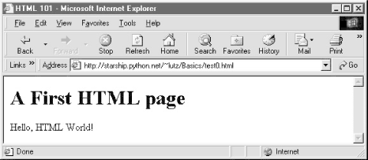To truly understand how this little file does its work, you need to know something about permission rules, HTML syntax, and Internet addresses. Let's take a quick first look at each of these topics before we move on to larger examples. 12.3.1.1 HTML file permission constraintsFirst of all, if you want to install this code on a different machine, it's usually necessary to grant web page files and their directories world-readable permission. That's because they are loaded by arbitrary people over the Web (actually, by someone named "nobody", who we'll introduce in a moment). An appropriate chmod command can be used to change permissions on Unix-like machines. For instance, a chmod 755 filename shell command usually suffices; it makes filename readable and executable by everyone, and writable by you only.[2] These directory and file permission details are typical, but they can vary from server to server. Be sure to find out about the local server's conventions if you upload this file to your site.
12.3.1.2 HTML basicsI promised that I wouldn't teach much HTML in this book, but you need to know enough to make sense of examples. In short, HTML is a descriptive markup language, based on tags -- items enclosed in <> pairs. Some tags stand alone (e.g., <HR> specifies a horizontal rule). Others appear in begin/end pairs where the end tag includes an extra slash. For instance, to specify the text of a level-1 header line, we write HTML code of the form <H1>text</H1>; the text between the tags shows up on the web page. Some tags also allow us to specify options. For example, a tag pair like <A href="address">text</A> specifies a hyperlink : pressing the link's text in the page directs the browser to access the Internet address (URL) listed in the href option. It's important to keep in mind that HTML is used only to describe pages: your web browser reads it and translates its description to a web page with headers, paragraphs, links, and the like. Notably absent is both layout information -- the browser is responsible for arranging components on the page -- and syntax for programming logic -- there are no "if" statements, loops, and so on. There is also no Python code in this file anywhere to be found; raw HTML is strictly for defining pages, not for coding programs or specifying all user-interface details. HTML's lack of user interface control and programmability is both a strength and a weakness. It's well-suited to describing pages and simple user interfaces at a high level. The browser, not you, handles physically laying out the page on your screen. On the other hand, HTML does not directly support full-blown GUIs and requires us to introduce CGI scripts (and other technologies) to web sites, in order to add dynamic programmability to otherwise static HTML. 12.3.1.3 Internet addresses (URLs)Once you write an HTML file, you need to put it some place where the outside world can find it. Like all HTML files, test0.html must be stored in a directory on the server machine, from which the resident web server program allows browsers to fetch pages. On the server where this example lives, the page's file must be stored in or below the public_html directory of my personal home directory -- that is, somewhere in the directory tree rooted at /home/lutz/public_html. For this section, examples live in a Basics subdirectory, so the complete Unix pathname of this file on the server is: /home/lutz/public_html/Basics/test0.html This path is different than its PP2E\Internet\Cgi-Web\Basics location on the book's CD http://examples.oreilly.com/python2), as given in the example file listing's title. When you reference this file on the client, though, you must specify its Internet address, sometimes called a URL, instead. To load the remote page, type the following text in your browser's address field (or click the example root page's test0.html hyperlink, which refers to same address): http://starship.python.net/~lutz/Basics/test0.html This string is a URL composed of multiple parts:
For completeness, you should also know that URLs can contain additional information (e.g., the server name part can specify a port number following a :), but we'll ignore these extra formatting rules here. If you're interested in more details, you might start by reading the urlparse module's entry in Python's library manual, as well as its source code in the Python standard library. You might also notice that a URL you type to access a page looks a bit different after the page is fetched (spaces become + characters, %s are added, etc.). This is simply because browsers must also generally follow URL escaping (i.e., translation) conventions, which we'll explore later in this chapter. 12.3.1.4 Using minimal URLsBecause browsers remember the prior page's Internet address, URLs embedded in HTML files can often omit the protocol and server names, as well as the file's directory path. If missing, the browser simply uses these components' values from the last page's address. This minimal syntax works both for URLs embedded in hyperlinks and form actions (we'll meet forms later in this chapter). For example, within a page that was fetched from directory dirpath on server www.server.com, minimal hyperlinks and form actions such as: <A HREF="more.html"> <FORM ACTION="next.cgi" ...> are treated exactly as if we had specified a complete URL with explicit server and path components, like the following: <A HREF="http://www.server.com/dirpath/more.html"> <FORM ACTION="http://www.server.com/dirpath/next.cgi" ...> The first minimal URL refers to file more.html on the same server and in the same directory that the page containing this hyperlink was fetched from; it is expanded to a complete URL within the browser. URLs can also employ Unix-style relative path syntax in the file path component. For instance, a hyperlink tag like <A HREF="http://spam.gif"> names a GIF file on the server machine and parent directory of the file that contains this link's URL. Why all the fuss about shorter URLs? Besides extending the life of your keyboard and eyesight, the main advantage of such minimal URLs is that they don't need to be changed if you ever move your pages to a new directory or server -- the server and path are inferred when the page is used, not hardcoded into its HTML. The flipside of this can be fairly painful: examples that do include explicit site and pathnames in URLs embedded within HTML code cannot be copied to other servers without source code changes. Scripts can help here, but editing source code can be error-prone.[3]
The downside of minimal URLs is that they don't trigger automatic Internet connection when followed. This becomes apparent only when you load pages from local files on your computer. For example, we can generally open HTML pages without connecting to the Internet at all, by pointing a web browser to a page's file that lives on the local machine (e.g., by clicking on its file icon). When browsing a page locally like this, following a fully specified URL makes the browser automatically connect to the Internet to fetch the referenced page or script. Minimal URLs, though, are opened on the local machine again; usually, the browser simply displays the referenced page or script's source code. The net effect is that minimal URLs are more portable, but tend to work better when running all pages live on the Internet. To make it easier to work with the examples in this book, they will often omit the server and path components in URLs they contain. In this book, to derive a page or script's true URL from a minimal URL, imagine that the string: http://starship.python.net/~lutz/subdir appears before the filename given by the URL. Your browser will, even if you don't. 12.3.2 A First CGI ScriptThe HTML file we just saw is just that -- an HTML file, not a CGI script. When referenced by a browser, the remote web server simply sends back the file's text to produce a new page in the browser. To illustrate the nature of CGI scripts, let's recode the example as a Python CGI program, as shown in Example 12-2. Example 12-2. PP2E\Internet\Cgi-Web\Basics\test0.cgi#!/usr/bin/python ####################################################### # runs on the server, prints html to create a new page; # executable permissions, stored in ~lutz/public_html, # url=http://starship.python.net/~lutz/Basics/test0.cgi ####################################################### print "Content-type: text/html\n" print "<TITLE>CGI 101</TITLE>" print "<H1>A First CGI script</H1>" print "<P>Hello, CGI World!</P>" This file, test0.cgi, makes the same sort of page if you point your browser at it (simply replace .html with .cgi in the URL). But it's a very different kind of animal -- it's an executable program that is run on the server in response to your access request. It's also a completely legal Python program, in which the page's HTML is printed dynamically, rather than being precoded in a static file. In fact, there is little that is CGI-specific about this Python program at all; if run from the system command line, it simply prints HTML rather than generating a browser page: C:\...\PP2E\Internet\Cgi-Web\Basics>python test0.cgi Content-type: text/html <TITLE>CGI 101</TITLE> <H1>A First CGI script</H1> <P>Hello, CGI World!</P> When run by the HTTP server program on a web server machine, however, the standard output stream is tied to a socket read by the browser on the client machine. In this context, all the output is sent across the Internet to your browser. As such, it must be formatted per the browser's expectations. In particular, when the script's output reaches your browser, the first printed line is interpreted as a header, describing the text that follows. There can be more than one header line in the printed response, but there must always be a blank line between the headers and the start of the HTML code (or other data). In this script, the first header line tells the browser that the rest of the transmission is HTML text (text/html), and the newline character (\n) at the end of the first print statement generates one more line-feed than the print statement itself. The rest of this program's output is standard HTML and is used by the browser to generate a web page on a client, exactly as if the HTML lived in a static HTML file on the server.[4]
CGI scripts are accessed just like HTML files: you either type the full URL of this script into your browser's address field, or click on the test0.cgi link line in the examples root page (which follows a minimal hyperlink that resolves to the script's full URL). Figure 12-3 shows the result page generated if you point your browser at this script to make it go. Figure 12-3. A simple web page from a CGI script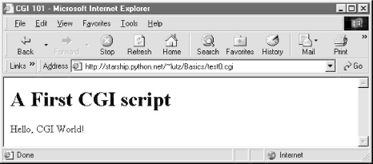12.3.2.1 Installing CGI scriptsLike HTML files, CGI scripts are simple text files that you can either create on your local machine and upload to the server by FTP, or write with a text editor running directly on the server machine (perhaps using a telnet client). However, because CGI scripts are run as programs, they have some unique installation requirements that differ from simple HTML files. In particular, they usually must be stored and named specially, and they must be configured as programs that are executable by arbitrary users. Depending on your needs, CGI scripts may also need help finding imported modules and may need to be converted to the server platform's text file format after being uploaded. Let's look at each install constraint in more depth:
This installation process may sound a bit complex at first glance, but it's not bad once you've worked through it on your own: it's only a concern at install time and can usually be automated to some extent with Python scripts run on the server. To summarize, most Python CGI scripts are text files of Python code, which:
Even if you must use a server machine configured by someone else, most of the machine's conventions should be easy to root out. For instance, on some servers you can rename this example to test0.py and it will continue to be run when accessed. On others, you might instead see the file's source code in a popped-up text editor when you access it. Try a .cgi suffix if the text is displayed rather than executed. CGI directory conventions can vary, too, but try the directory where you normally store HTML files first. As usual, you should consult the conventions for any machine that you plan to copy these example files to. 12.3.2.2 Automating installation stepsBut wait -- why do things the hard way? Before you start installing scripts by hand, remember that Python programs can usually do much of your work for you. It's easy to write Python scripts that automate some of the CGI installation steps using the operating systems tools that we met earlier in the book. For instance, while developing the examples in this chapter, I did all editing on my PC (it's generally more dependable than a telnet client). To install, I put all the examples in a tar file, which is uploaded to the Linux server by FTP in a single step. Unfortunately, my server expects CGI scripts to have Unix (not DOS) end-of-line markers; unpacking the tar file did not convert end-of-lines or retain executable permission settings. But rather than tracking down all the web CGI scripts and fixing them by hand, I simply run the Python script in Example 12-3 from within a Unix find command after each upload. Example 12-3. PP2E\Internet\Cgi-Web\fixcgi.py########################################################################
# run fom a unix find command to automate some cgi script install steps;
# example: find . -name "*.cgi" -print -exec python fixcgi.py \{} \;
# which converts all cgi scripts to unix line-feed format (needed on
# starship) and gives all cgi files executable mode, else won't be run;
# do also: chmod 777 PyErrata/DbaseFiles/*, vi Extern/Email/mailconfig*;
# related: fixsitename.py, PyTools/fixeoln*.py, System/Filetools
########################################################################
# after: ungzip, untar, cp -r Cgi-Web/* ~/public_html
import sys, string, os
fname = sys.argv[1]
old = open(fname, 'rb').read( )
new = string.replace(old, '\r\n', '\n')
open(fname, 'wb').write(new)
if fname[-3:] == 'cgi': os.chmod(fname, 0755) # note octal int: rwx,sgo
This script is kicked off at the top of the Cgi-Web directory, using a Unix csh shell command to apply it to every CGI file in a directory tree, like this: % find . -name "*.cgi" -print -exec python fixcgi.py \{} \;
./Basics/languages-src.cgi
./Basics/getfile.cgi
./Basics/languages.cgi
./Basics/languages2.cgi
./Basics/languages2reply.cgi
./Basics/putfile.cgi
...more...
Recall from Chapter 2 that there are various ways to walk directory trees and find matching files in pure Python code, including the find module, os.path.walk, and one we'll use in the next section's script. For instance, a pure Python and more portable alternative could be kicked off like this: C:\...\PP2E\Internet\Cgi-Web>python
>>> import os
>>> from PP2E.PyTools.find import find
>>> for filename in find('*.cgi', '.'):
... print filename
... stat = os.system('python fixcgi.py ' + filename)
...
.\Basics\getfile.cgi
.\Basics\languages-src.cgi
.\Basics\languages.cgi
.\Basics\languages2.cgi
...more...
The Unix find command simply does the same, but outside the scope of Python: the command line after -exec is run for each matching file found. For more details about the find command, see its manpage. Within the Python script, string.replace translates to Unix end-of-line markers, and os.chmod works just like a shell chmod command. There are other ways to translate end-of-lines, too; see Chapter 5. 12.3.2.3 Automating site move editsSpeaking of installation tasks, a common pitfall of web programming is that hardcoded site names embedded in HTML code stop working the minute you relocate the site to a new server. Minimal URLs (just the filename) are more portable, but for various reasons are not always used. Somewhere along the way, I also grew tired of updating URLs in hyperlinks and form actions, and wrote a Python script to do it all for me (see Example 12-4). Example 12-4. PP2E\Internet\Cgi-Web\fixsitename.py#!/usr/bin/env python
###############################################################
# run this script in Cgi-Web dir after copying book web
# examples to a new server--automatically changes all starship
# server references in hyperlinks and form action tags to the
# new server/site; warns about references that weren't changed
# (may need manual editing); note that starship references are
# not usually needed or used--since browsers have memory, server
# and path can usually be omitted from a URL in the prior page
# if it lives at the same place (e.g., "file.cgi" is assumed to
# be in the same server/path as a page that contains this name,
# with a real url like "http://lastserver/lastpath/file.cgi"),
# but a handful of URLs are fully specified in book examples;
# reuses the Visitor class developed in the system chapters,
# to visit and convert all files at and below current dir;
###############################################################
import os, string
from PP2E.PyTools.visitor import FileVisitor # os.path.walk wrapper
listonly = 0
oldsite = 'starship.python.net/~lutz' # server/rootdir in book
newsite = 'XXXXXX/YYYYYY' # change to your site
warnof = ['starship.python', 'lutz'] # warn if left after fix
fixext = ['.py', '.html', '.cgi'] # file types to check
class FixStarship(FileVisitor):
def __init__(self, listonly=0): # replace oldsite refs
FileVisitor.__init__(self, listonly=listonly) # in all web text files
self.changed, self.warning = [], [] # need diff lists here
def visitfile(self, fname): # or use find.find list
FileVisitor.visitfile(self, fname)
if self.listonly:
return
if os.path.splitext(fname)[1] in fixext:
text = open(fname, 'r').read( )
if string.find(text, oldsite) != -1:
text = string.replace(text, oldsite, newsite)
open(fname, 'w').write(text)
self.changed.append(fname)
for word in warnof:
if string.find(text, word) != -1:
self.warning.append(fname); break
if __name__ == '__main__':
# don't run auto if clicked
go = raw_input('This script changes site in all web files; continue?')
if go != 'y':
raw_input('Canceled - hit enter key')
else:
walker = FixStarship(listonly)
walker.run( )
print 'Visited %d files and %d dirs' % (walker.fcount, walker.dcount)
def showhistory(label, flist):
print '\n%s in %d files:' % (label, len(flist))
for fname in flist:
print '=>', fname
showhistory('Made changes', walker.changed)
showhistory('Saw warnings', walker.warning)
def edithistory(flist):
for fname in flist: # your editor here
os.system('vi ' + fname)
if raw_input('Edit changes?') == 'y': edithistory(walker.changed)
if raw_input('Edit warnings?') == 'y': edithistory(walker.warning)
This is a more complex script that reuses the visitor.py module we wrote in Chapter 5 to wrap the os.path.walk call. If you read that chapter, this script will make sense. If not, we won't go into many more details here again. Suffice it to say that this program visits all source code files at and below the directory where it is run, globally changing all starship.python.net/~lutz appearances to whatever you've assigned to variable newsite within the script. On request, it will also launch your editor to view files changed, as well as files that contain potentially suspicious strings. As coded, it launches the Unix vi text editor at the end, but you can change this to start whatever editor you like (this is Python, after all): C:\...\PP2E\Internet\Cgi-Web>python fixsitename.py This script changes site in all web files; continue?y . ... 1 => .\PyInternetDemos.html 2 => .\README.txt 3 => .\fixcgi.py 4 => .\fixsitename.py 5 => .\index.html 6 => .\python_snake_ora.gif .\Basics ... 7 => .\Basics\mlutz.jpg 8 => .\Basics\languages.html 9 => .\Basics\languages-src.cgi ...more... 146 => .\PyMailCgi\temp\secret.doc.txt Visited 146 files and 16 dirs Made changes in 8 files: => .\fixsitename.py => .\Basics\languages.cgi => .\Basics\test3.html => .\Basics\test0.py => .\Basics\test0.cgi => .\Basics\test5c.html => .\PyMailCgi\commonhtml.py => .\PyMailCgi\sendurl.py Saw warnings in 14 files: => .\PyInternetDemos.html => .\fixsitename.py => .\index.html => .\Basics\languages.cgi ...more... => .\PyMailCgi\pymailcgi.html => .\PyMailCgi\commonhtml.py => .\PyMailCgi\sendurl.py Edit changes?n Edit warnings?y The net effect is that this script automates part of the site relocation task: running it will update all pages' URLs for the new site name automatically, which is considerably less aggravating than manually hunting down and editing each such reference by hand. There aren't many hardcoded starship site references in web examples in this book (the script found and fixed eight above), but be sure to run this script in the Cgi-Web directory from a command line, after copying the book examples to your own site. To use this script for other site moves, simply set both oldsite and newsite as appropriate. The truly ambitious scriptmaster might even run such a script from within another that first copies a site's contents by FTP (see ftplib in the previous chapter).[5]
12.3.2.4 Finding Python on the serverOne last install pointer: even though Python doesn't have to be installed on any clients in the context of a server-side web application, it does have to exist on the server machine where your CGI scripts are expected to run. If you are using a web server that you did not configure yourself, you must be sure that Python lives on that machine. Moreover, you need to find where it is on that machine so that you can specify its path in the #! line at the top of your script. By now, Python is a pervasive tool, so this generally isn't as big a concern as it once was. As time goes by, it will become even more common to find Python as a standard component of server machines. But if you're not sure if or where Python lives on yours, here are some tips:
If your ISP is unsympathetic to your need for Python and you are willing to relocate your site to one that is, you can find lists of Python-friendly ISPs by searching http://www.python.org. And if you choose to install Python on your server machine yourself, be sure to check out the freeze tool shipped with the Python source distribution (in the Tools directory). With freeze, you can create a single executable program file that contains the entire Python interpreter, as well as all the standard library modules. Such a frozen interpreter can be uploaded to your web account by FTP in a single step, and it won't require a full-blown Python installation on the server. 12.3.3 Adding Pictures and Generating TablesNow let's get back to writing server-side code. As anyone who's ever surfed the Web knows, web pages usually consist of more than simple text. Example 12-5 is a Python CGI script that prints an <IMG> HTML tag in its output to produce a graphic image in the client browser. There's not much Python-specific about this example, but note that just as for simple HTML files, the image file (ppsmall.gif ) lives on and is downloaded from the server machine when the browser interprets the output of this script. Example 12-5. PP2E\Internet\Cgi-Web\Basics\test1.cgi#!/usr/bin/python text = """Content-type: text/html <TITLE>CGI 101</TITLE> <H1>A Second CGI script</H1> <HR> <P>Hello, CGI World!</P> <IMG src="ppsmall.gif" BORDER=1 ALT=[image]> <HR> """ print text Notice the use of the triple-quoted string block here; the entire HTML string is sent to the browser in one fell swoop, with the print statement at the end. If client and server are both functional, a page that looks like Figure 12-4 will be generated when this script is referenced and run. Figure 12-4. A page with an image generated by test1.cgi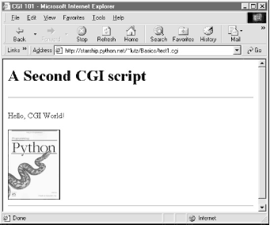So far, our CGI scripts have been putting out canned HTML that could have just as easily been stored in an HTML file. But because CGI scripts are executable programs, they can also be used to generate HTML on the fly, dynamically -- even, possibly, in response to a particular set of user inputs sent to the script. That's the whole purpose of CGI scripts, after all. Let's start using this to better advantage now, and write a Python script that builds up response HTML programmatically (see Example 12-6). Example 12-6. PP2E\Internet\Cgi-Web\Basics\test2.cgi#!/usr/bin/python
print """Content-type: text/html
<TITLE>CGI 101</TITLE>
<H1>A Third CGI script</H1>
<HR>
<P>Hello, CGI World!</P>
<table border=1>
"""
for i in range(5):
print "<tr>"
for j in range(4):
print "<td>%d.%d</td>" % (i, j)
print "</tr>"
print """
</table>
<HR>
"""
Despite all the tags, this really is Python code -- the test2.cgi script uses triple-quoted strings to embed blocks of HTML again. But this time, the script also uses nested Python for loops to dynamically generate part of the HTML that is sent to the browser. Specifically, it emits HTML to lay out a two-dimensional table in the middle of a page, as shown in Figure 12-5. Figure 12-5. A page with a table generated by test2.cgi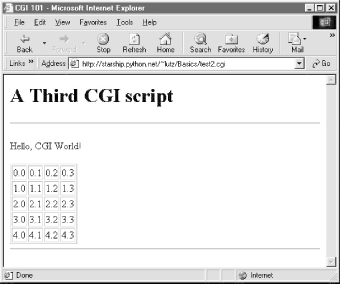Each row in the table displays a "row.column" pair, as generated by the executing Python script. If you're curious how the generated HTML looks, select your browser's View Source option after you've accessed this page. It's a single HTML page composed of the HTML generated by the first print in the script, then the for loops, and finally the last print. In other words, the concatenation of this script's output is an HTML document with headers. 12.3.3.1 Table tagsThis script generates HTML table tags. Again, we're not out to learn HTML here, but we'll take a quick look just so you can make sense of the example. Tables are declared by the text between <table> and </table> tags in HTML. Typically, a table's text in turn declares the contents of each table row between <tr> and </tr> tags and each column within a row between <td> and </td> tags. The loops in our script build up HTML to declare five rows of four columns each, by printing the appropriate tags, with the current row and column number as column values. For instance, here is part of the script's output, defining the first two rows: <table border=1> <tr> <td>0.0</td> <td>0.1</td> <td>0.2</td> <td>0.3</td> </tr> <tr> <td>1.0</td> <td>1.1</td> <td>1.2</td> <td>1.3</td> </tr> . . . </table> Other table tags and options let us specify a row title (<th>), layout borders, and so on. We'll see more table syntax put to use to lay out forms in a later section. 12.3.4 Adding User InteractionCGI scripts are great at generating HTML on the fly like this, but they are also commonly used to implement interaction with a user typing at a web browser. As described earlier in this chapter, web interactions usually involve a two-step process and two distinct web pages: you fill out a form page and press submit, and a reply page eventually comes back. In between, a CGI script processes the form input. 12.3.4.1 SubmissionThat description sounds simple enough, but the process of collecting user inputs requires an understanding of a special HTML tag, <form>. Let's look at the implementation of a simple web interaction to see forms at work. First off, we need to define a form page for the user to fill out, as shown in Example 12-7. Example 12-7. PP2E\Internet\Cgi-Web\Basics\test3.html<html><body>
<title>CGI 101</title>
<H1>A first user interaction: forms</H1>
<hr>
<form method=POST action="http://starship.python.net/~lutz/Basics/test3.cgi">
<P><B>Enter your name:</B>
<P><input type=text name=user>
<P><input type=submit>
</form>
</BODY></HTML>
test3.html is a simple HTML file, not a CGI script (though its contents could be printed from a script as well). When this file is accessed, all the text between its <form> and </form> tags generate the input fields and Submit button shown in Figure 12-6. Figure 12-6. A simple form page generated by test3.html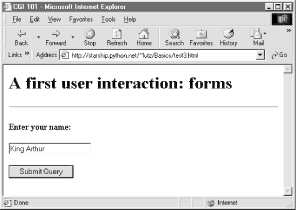12.3.4.2 More on form tagsWe won't go into all the details behind coding HTML forms, but a few highlights are worth underscoring. Within a form's HTML code:
Notice that the action URL in this example's form spells out the full address for illustration. Because the browser remembers where the enclosing HTML page came from, it works the same with just the script's filename, as shown in Example 12-8. Example 12-8. PP2E\Internet\Cgi-Web\Basics\test3-minimal.html<html><body>
<title>CGI 101</title>
<H1>A first user interaction: forms</H1>
<hr>
<form method=POST action="test3.cgi">
<P><B>Enter your name:</B>
<P><input type=text name=user>
<P><input type=submit>
</form>
</BODY></HTML>
It may help to remember that URLs embedded in form action tags and hyperlinks are directions to the browser first, not the script. The test3.cgi script itself doesn't care which URL form is used to trigger it -- minimal or complete. In fact, all parts of a URL through the script filename (and up to URL query parameters) is used in the conversation between browser and HTTP server, before a CGI script is ever spawned. As long as the browser knows which server to contact, the URL will work, but URLs outside of a page (e.g., typed into a browser's address field or sent to Python's urllib module) usually must be completely specified, because there is no notion of a prior page. 12.3.4.3 ResponseSo far, we've created only a static page with an input field. But the Submit button on this page is loaded to work magic. When pressed, it triggers the remote program whose URL is listed in the form's action option, and passes this program the input data typed by the user, according to the form's method encoding style option. On the server, a Python script is started to handle the form's input data while the user waits for a reply on the client, as shown in Example 12-9. Example 12-9. PP2E\Internet\Cgi-Web\Basics\test3.cgi#!/usr/bin/python
#######################################################
# runs on the server, reads form input, prints html;
# url=http://server-name/root-dir/Basics/test3.cgi
#######################################################
import cgi
form = cgi.FieldStorage( ) # parse form data
print "Content-type: text/html" # plus blank line
html = """
<TITLE>test3.cgi</TITLE>
<H1>Greetings</H1>
<HR>
<P>%s</P>
<HR>"""
if not form.has_key('user'):
print html % "Who are you?"
else:
print html % ("Hello, %s." % form['user'].value)
As before, this Python CGI script prints HTML to generate a response page in the client's browser. But this script does a bit more: it also uses the standard cgi module to parse the input data entered by the user on the prior web page (see Figure 12-6). Luckily, this is all automatic in Python: a call to the cgi module's FieldStorage class automatically does all the work of extracting form data from the input stream and environment variables, regardless of how that data was passed -- in a post style stream or in get style parameters appended to the URL. Inputs sent in both styles look the same to Python scripts. Scripts should call cgi.FieldStoreage only once and before accessing any field values. When called, we get back an object that looks like a dictionary -- user input fields from the form (or URL) show up as values of keys in this object. For example, in the script, form['user'] is an object whose value attribute is a string containing the text typed into the form's text field. If you flip back to the form page's HTML, you'll notice that the input field's name option was user -- the name in the form's HTML has become a key we use to fetch the input's value from a dictionary. The object returned by FieldStorage supports other dictionary operations, too -- for instance, the has_key method may be used to check if a field is present in the input data. Before exiting, this script prints HTML to produce a result page that echoes back what the user typed into the form. Two string-formatting expressions (%) are used to insert the input text into a reply string, and the reply string into the triple-quoted HTML string block. The body of the script's output looks like this: <TITLE>test3.cgi</TITLE> <H1>Greetings</H1> <HR> <P>Hello, King Arthur.</P> <HR> In a browser, the output is rendered into a page like the one in Figure 12-7. Figure 12-7. test3.cgi result for parameters in a form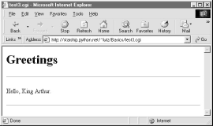12.3.4.4 Passing parameters in URLsNotice that the URL address of the script that generated this page shows up at the top of the browser. We didn't type this URL itself -- it came from the action tag of the prior page's form HTML. However, there is nothing stopping us from typing the script's URL explicitly in our browser's address field to invoke the script, just as we did for our earlier CGI script and HTML file examples. But there's a catch here: where does the input field's value come from if there is no form page? That is, if we type the CGI script's URL ourselves, how does the input field get filled in? Earlier, when we talked about URL formats, I mentioned that the get encoding scheme tacks input parameters onto the end of URLs. When we type script addresses explicitly, we can also append input values on the end of URLs, where they serve the same purpose as <input> fields in forms. Moreover, the Python cgi module makes URL and form inputs look identical to scripts. For instance, we can skip filling out the input form page completely, and directly invoke our test3.cgi script by visiting a URL of the form: http://starship.python.net/~lutz/Basics/test3.cgi?user=Brian In this URL, a value for the input named user is specified explicitly, as if the user had filled out the input page. When called this way, the only constraint is that the parameter name user must match the name expected by the script (and hardcoded in the form's HTML). We use just one parameter here, but in general, URL parameters are typically introduced with a ? and followed by one or more name=value assignments, separated by & characters if there is more than one. Figure 12-8 shows the response page we get after typing a URL with explicit inputs. Figure 12-8. test3.cgi result for parameters in a URL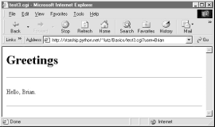In general, any CGI script can be invoked either by filling out and submitting a form page or by passing inputs at the end of a URL. When CGI scripts are invoked with explicit input parameters this way, it's difficult to not see their similarity to functions, albeit ones that live remotely on the Net. Passing data to scripts in URLs is similar to keyword arguments in Python functions, both operationally and syntactically. In fact, in Chapter 15we will meet a system called Zope that makes the relationship between URLs and Python function calls even more literal (URLs become more direct function calls). Incidentally, if you clear out the name input field in the form input page (i.e., make it empty) and press submit, the user name field becomes empty. More accurately, the browser may not send this field along with the form data at all, even though it is listed in the form layout HTML. The CGI script detects such a missing field with the dictionary has_key method and produces the page captured in Figure 12-9 in response. Figure 12-9. An empty name field produces an error pageIn general, CGI scripts must check to see if any inputs are missing, partly because they might not be typed by a user in the form, but also because there may be no form at all -- input fields might not be tacked on to the end of an explicitly typed URL. For instance, if we type the script's URL without any parameters at all (i.e., omit the text ? and beyond), we get this same error response page. Since we can invoke any CGI through a form or URL, scripts must anticipate both scenarios. 12.3.5 Using Tables to Lay Out FormsNow let's move on to something a bit more realistic. In most CGI applications, input pages are composed of multiple fields. When there is more than one, input labels and fields are typically laid out in a table, to give the form a well-structured appearance. The HTML file in Example 12-10 defines a form with two input fields. Example 12-10. PP2E\Internet\Cgi-Web\Basics\test4.html<html><body>
<title>CGI 101</title>
<H1>A second user interaction: tables</H1>
<hr>
<form method=POST action="test4.cgi">
<table>
<TR>
<TH align=right>Enter your name:
<TD><input type=text name=user>
<TR>
<TH align=right>Enter your age:
<TD><input type=text name=age>
<TR>
<TD colspan=2 align=center>
<input type=submit value="Send">
</table>
</form>
</body></html>
The <TH> tag defines a column like <TD>, but also tags it as a header column, which generally means it is rendered in a bold font. By placing the input fields and labels in a table like this, we get an input page like that shown in Figure 12-10. Labels and inputs are automatically lined up vertically in columns much as they were by the Tkinter GUI geometry managers we met earlier in this book. Figure 12-10. A form laid out with table tags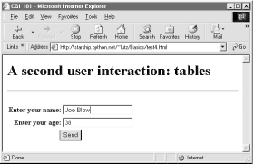When this form's Submit button (labeled "Send" by the page's HTML) is pressed, it causes the script in Example 12-11 to be executed on the server machine, with the inputs typed by the user. Example 12-11. PP2E\Internet\Cgi-Web\Basics\test4.cgi#!/usr/bin/python
#######################################################
# runs on the server, reads form input, prints html;
# url http://server-name/root-dir/Basics/test4.cgi
#######################################################
import cgi, sys
sys.stderr = sys.stdout # errors to browser
form = cgi.FieldStorage( ) # parse form data
print "Content-type: text/html\n" # plus blank line
# class dummy:
# def __init__(self, s): self.value = s
# form = {'user': dummy('bob'), 'age':dummy('10')}
html = """
<TITLE>test4.cgi</TITLE>
<H1>Greetings</H1>
<HR>
<H4>%s</H4>
<H4>%s</H4>
<H4>%s</H4>
<HR>"""
if not form.has_key('user'):
line1 = "Who are you?"
else:
line1 = "Hello, %s." % form['user'].value
line2 = "You're talking to a %s server." % sys.platform
line3 = ""
if form.has_key('age'):
try:
line3 = "Your age squared is %d!" % (int(form['age'].value) ** 2)
except:
line3 = "Sorry, I can't compute %s ** 2." % form['age'].value
print html % (line1, line2, line3)
The table layout comes from the HTML file, not this Python CGI script. In fact, this script doesn't do much new -- it uses string formatting to plug input values into the response page's HTML triple-quoted template string as before, this time with one line per input field. There are, however, a few new tricks here worth noting, especially regarding CGI script debugging and security. We'll talk about them in the next two sections. 12.3.5.1 Converting strings in CGI scriptsJust for fun, the script echoes back the name of the server platform by fetching sys.platform along with the square of the age input field. Notice that the age input's value must be converted to an integer with the built-in int function; in the CGI world, all inputs arrive as strings. We could also convert to an integer with the built-in string.atoi or eval function. Conversion (and other) errors are trapped gracefully in a try statement to yield an error line, rather than letting our script die.
12.3.5.2 Debugging CGI scriptsErrors happen, even in the brave new world of the Internet. Generally speaking, debugging CGI scripts can be much more difficult than debugging programs that run on your local machine. Not only do errors occur on a remote machine, but scripts generally won't run without the context implied by the CGI model. The script in Example 12-11 demonstrates the following two common debugging tricks.
Here are a few general tips for debugging your server-side CGI scripts:
When this script is run by submitting the input form page, its output produces the new reply page shown in Figure 12-11. Figure 12-11. Reply page generated by test4.cgiAs usual, we can pass parameters to this CGI script at the end of a URL, too. Figure 12-12 shows the page we get when passing a user and age explicitly in the URL. Notice that we have two parameters after the ? this time; we separate them with &. Also note that we've specified a blank space in the user value with +. This is a common URL encoding convention. On the server side, the + is automatically replaced with a space again. It's also part of the standard escape rule for URL strings, which we'll revisit later. Figure 12-12. Reply page generated by test4.cgi for parameters in URL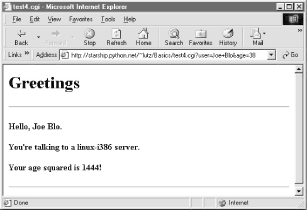12.3.6 Adding Common Input DevicesSo far, we've been typing inputs into text fields. HTML forms support a handful of input controls (what we'd call widgets in the traditional GUI world) for collecting user inputs. Let's look at a CGI program that shows all the common input controls at once. As usual, we define both an HTML file to lay out the form page and a Python CGI script to process its inputs and generate a response. The HTML file is presented in Example 12-12. Example 12-12. PP2E\Internet\Cgi-Web\Basics\test5a.html<HTML><BODY>
<TITLE>CGI 101</TITLE>
<H1>Common input devices</H1>
<HR>
<FORM method=POST action="test5.cgi">
<H3>Please complete the following form and click Send</H3>
<P><TABLE>
<TR>
<TH align=right>Name:
<TD><input type=text name=name>
<TR>
<TH align=right>Shoe size:
<TD><table>
<td><input type=radio name=shoesize value=small>Small
<td><input type=radio name=shoesize value=medium>Medium
<td><input type=radio name=shoesize value=large>Large
</table>
<TR>
<TH align=right>Occupation:
<TD><select name=job>
<option>Developer
<option>Manager
<option>Student
<option>Evangelist
<option>Other
</select>
<TR>
<TH align=right>Political affiliations:
<TD><table>
<td><input type=checkbox name=language value=Python>Pythonista
<td><input type=checkbox name=language value=Perl>Perlmonger
<td><input type=checkbox name=language value=Tcl>Tcler
</table>
<TR>
<TH align=right>Comments:
<TD><textarea name=comment cols=30 rows=2>Enter text here</textarea>
<TR>
<TD colspan=2 align=center>
<input type=submit value="Send">
</TABLE>
</FORM>
<HR>
</BODY></HTML>
When rendered by a browser, the page in Figure 12-13 appears. Figure 12-13. Form page generated by test5a.html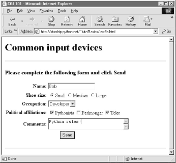This page contains a simple text field as before, but it also has radiobuttons, a pull-down selection list, a set of multiple-choice checkbuttons, and a multiple-line text input area. All have a name option in the HTML file, which identifies their selected value in the data sent from client to server. When we fill out this form and click the Send submit button, the script in Example 12-13 runs on the server to process all the input data typed or selected in the form. Example 12-13. PP2E\Internet\Cgi-Web\Basics\test5.cgi#!/usr/bin/python
#######################################################
# runs on the server, reads form input, prints html;
# url=http://server-name/root-dir/Basics/test5.cgi
#######################################################
import cgi, sys, string
form = cgi.FieldStorage( ) # parse form data
print "Content-type: text/html" # plus blank line
html = """
<TITLE>test5.cgi</TITLE>
<H1>Greetings</H1>
<HR>
<H4>Your name is %(name)s</H4>
<H4>You wear rather %(shoesize)s shoes</H4>
<H4>Your current job: %(job)s</H4>
<H4>You program in %(language)s</H4>
<H4>You also said:</H4>
<P>%(comment)s</P>
<HR>"""
data = {}
for field in ['name', 'shoesize', 'job', 'language', 'comment']:
if not form.has_key(field):
data[field] = '(unknown)'
else:
if type(form[field]) != type([]):
data[field] = form[field].value
else:
values = map(lambda x: x.value, form[field])
data[field] = string.join(values, ' and ')
print html % data
This Python script doesn't do much; it mostly just copies form field information into a dictionary called data, so that it can be easily plugged into the triple-quoted response string. A few of its tricks merit explanation:
When the form page is filled out and submitted, the script creates the response shown in Figure 12-14 -- essentially just a formatted echo of what was sent. Figure 12-14. Response page created by test5.cgi (1)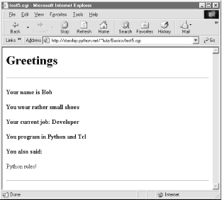12.3.6.1 Changing input layoutsSuppose that you've written a system like this, and your users, clients, and significant other start complaining that the input form is difficult to read. Don't worry. Because the CGI model naturally separates the user interface (the HTML page definition) from the processing logic (the CGI script), it's completely painless to change the form's layout. Simply modify the HTML file; there's no need to change the CGI code at all. For instance, Example 12-14 contains a new definition of the input that uses tables a bit differently to provide a nicer layout with borders. Example 12-14. PP2E\Internet\Cgi-Web\Basics\test5b.html<HTML><BODY>
<TITLE>CGI 101</TITLE>
<H1>Common input devices: alternative layout</H1>
<P>Use the same test5.cgi server side script, but change the
layout of the form itself. Notice the separation of user interface
and processing logic here; the CGI script is independent of the
HTML used to interact with the user/client.</P><HR>
<FORM method=POST action="test5.cgi">
<H3>Please complete the following form and click Submit</H3>
<P><TABLE border cellpadding=3>
<TR>
<TH align=right>Name:
<TD><input type=text name=name>
<TR>
<TH align=right>Shoe size:
<TD><input type=radio name=shoesize value=small>Small
<input type=radio name=shoesize value=medium>Medium
<input type=radio name=shoesize value=large>Large
<TR>
<TH align=right>Occupation:
<TD><select name=job>
<option>Developer
<option>Manager
<option>Student
<option>Evangelist
<option>Other
</select>
<TR>
<TH align=right>Political affiliations:
<TD><P><input type=checkbox name=language value=Python>Pythonista
<P><input type=checkbox name=language value=Perl>Perlmonger
<P><input type=checkbox name=language value=Tcl>Tcler
<TR>
<TH align=right>Comments:
<TD><textarea name=comment cols=30 rows=2>Enter spam here</textarea>
<TR>
<TD colspan=2 align=center>
<input type=submit value="Submit">
<input type=reset value="Reset">
</TABLE>
</FORM>
</BODY></HTML>
When we visit this alternative page with a browser, we get the interface shown in Figure 12-15. Figure 12-15. Form page created by test5b.html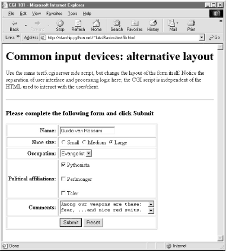Now, before you go blind trying to detect the differences in this and the prior HTML file, I should note that the HTML differences that produce this page are much less important than the fact that the action fields in these two pages' forms reference identical URLs. Pressing this version's Submit button triggers the exact same and totally unchanged Python CGI script again, test5.cgi (Example 12-13). That is, scripts are completely independent of the layout of the user-interface used to send them information. Changes in the response page require changing the script, of course; but we can change the input page's HTML as much as we like, without impacting the server-side Python code. Figure 12-16 shows the response page produced by the script this time around. Figure 12-16. Response page created by test5.cgi (2)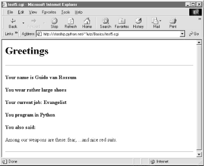12.3.7 Passing Parameters in Hardcoded URLsEarlier, we passed parameters to CGI scripts by listing them at the end of a URL typed into the browser's address field (after a ?). But there's nothing sacred about the browser's address field. In particular, there's nothing stopping us from using the same URL syntax in hyperlinks that we hardcode in web page definitions. For example, the web page from Example 12-15 defines three hyperlinks (the text between <A> and </A> tags), which all trigger our original test5.cgi script again, but with three different precoded sets of parameters. Example 12-15. PP2E\Internet\Cgi-Web\Basics\test5c.html<HTML><BODY> <TITLE>CGI 101</TITLE> <H1>Common input devices: URL parameters</H1> <P>This demo invokes the test5.cgi server-side script again, but hardcodes input data to the end of the script's URL, within a simple hyperlink (instead of packaging up a form's inputs). Click your browser's "show page source" button to view the links associated with each list item below. <P>This is really more about CGI than Python, but notice that Python's cgi module handles both this form of input (which is also produced by GET form actions), as well as POST-ed forms; they look the same to the Python CGI script. In other words, cgi module users are independent of the method used to submit data. <P>Also notice that URLs with appended input values like this can be generated as part of the page output by another CGI script, to direct a next user click to the right place and context; together with type 'hidden' input fields, they provide one way to save state between clicks. </P><HR> <UL> <LI><A href="test5.cgi?name=Bob&shoesize=small">Send Bob, small</A> <LI><A href="test5.cgi?name=Tom&language=Python">Send Tom, Python</A> <LI><A href= "http://starship.python.net/~lutz/Basics/test5.cgi?job=Evangelist&comment=spam"> Send Evangelist, spam</A> </UL> <HR></BODY></HTML> This static HTML file defines three hyperlinks -- the first two are minimal and the third is fully specified, but all work similarly (again, the target script doesn't care). When we visit this file's URL, we see the page shown in Figure 12-17. It's mostly just a page for launching canned calls to the CGI script. Figure 12-17. Hyperlinks page created by test5c.html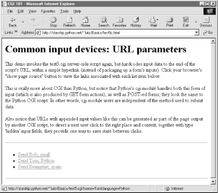Clicking on this page's second link creates the response page in Figure 12-18. This link invokes the CGI script, with the name parameter set to "Tom" and the language parameter set to "Python," simply because those parameters and values are hardcoded in the URL listed in the HTML for the second hyperlink. It's exactly as if we had manually typed the line shown at the top of the browser in Figure 12-18. Figure 12-18. Response page created by test5.cgi (3)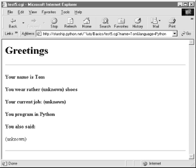Notice that lots of fields are missing here; the test5.cgi script is smart enough to detect and handle missing fields and generate an unknown message in the reply page. It's also worth pointing out that we're reusing the Python CGI script again here. The script itself is completely independent of both the user-interface format of the submission page, as well as the technique used to invoke it (from a submitted form or a hardcoded URL). By separating user interface from processing logic, CGI scripts become reusable software components, at least within the context of the CGI environment. 12.3.7.1 Saving CGI script state informationBut the real reason for showing this technique is that we're going to use it extensively in the larger case studies in the next two chapters to implement lists of dynamically generated selections that "know" what to do when clicked. Precoded parameters in URLs are a way to retain state information between pages -- they can be used to direct the action of the next script to be run. As such, hyperlinks with such parameters are sometimes known as "smart links." Normally, CGI scripts run autonomously, with no knowledge of any other scripts that may have run before. That hasn't mattered in our examples so far, but larger systems are usually composed of multiple user interaction steps and many scripts, and we need a way to keep track of information gathered along the way. Generating hardcoded URLs with parameters is one way for a CGI script to pass data to the next script in the application. When clicked, such URL parameters send pre-programmed selection information back to another server-side handler script. For example, a site that lets you read your email may present you with a list of viewable email messages, implemented in HTML as a list of hyperlinks generated by another script. Each hyperlink might include the name of the message viewer script, along with parameters identifying the selected message number, email server name, and so on -- as much data as is needed to fetch the message associated with a particular link. A retail site may instead serve up a generated list of product links, each of which triggers a hardcoded hyperlink containing the product number, its price, and so on. In general, there are a variety of ways to pass or retain state information between CGI script executions:
We'll meet most of these mediums in later examples in this chapter and in the two chapters that follow. |
| I l@ve RuBoard |
|